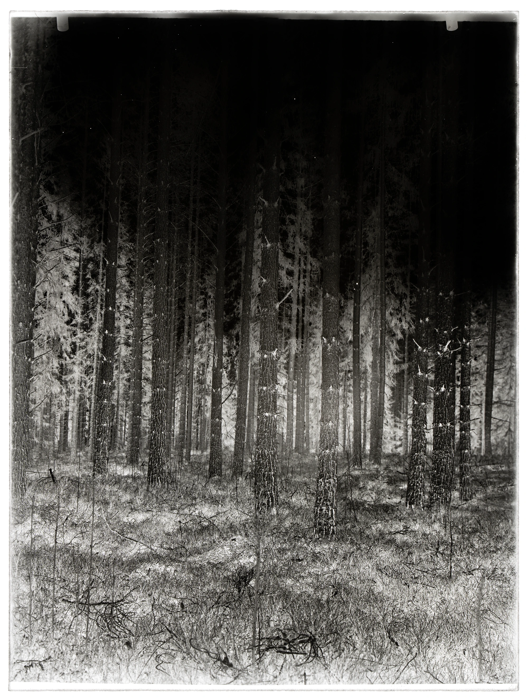
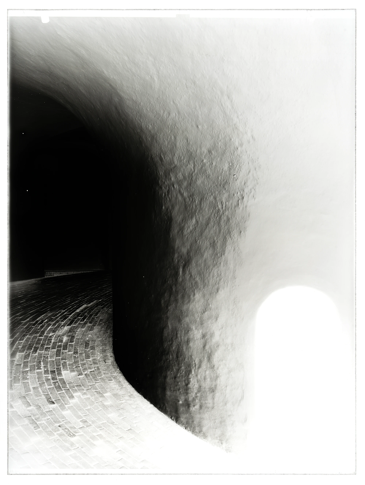

Silver is blackened by light, made insensitive, refined in a bath of gold (sel d'or)
It is in the technological youth of photography that its entanglement with time is most evident. Therefore, the glass negative lends itself to artistic studies of this connection. There is a potential in the negative: an unrealized archetypal image that can give rise to something. Thus, through exposure, a suite of miniature subjects emerges. At any moment, potential can be realized, through the final stage of photography: silver is blackened by light, made insensitive, refined in a bath of gold (sel d’or)–parts of the silver are replaced by the purest of metals. The subject is immortalized.